Overview
The Prokudin-Gorskii collection is a collection of photos taken before the era of colored photography. The photographer, Sergei Mikhailovich Prokudin-Gorskii, he set out to take black and white photographs that could be reconstructed into colored photographs. He took 3 photos at different color filters which capture frequencies corresponding to red, green, and blue. We can reconstruct the colored version of the photo by stacking those layers!
Approach
The original photos come in a greyscale strip with the three different color filters stacked on each other.
We had to cut up the pictures into thirds and then line them up correctly in order to reconstruct an accurate photo without color blur. To line them up correctly, we use the brightness of each channel and match them up by minimizing their pixelwise Euclidean distance or maximizing normalized cross-correlation (NCC).
I used them interchangeably since I saw no difference.
The pictures have their shifts in their captions as "color · (dx, dy)"
Single-scale alignment
In the naive exhaustive search method, I used nested for loops to try every x and y shift for the red and green channels and compared that with the blue channel, which was the anchored channel. At first I was getting erroneous results because I was using np.roll to shift the images, then taking the similarity score using all of the pixels, including the garbage that rolls over. I fixed this by only measuring the similarity of the pixels inside the center.


Multi-scale pyramid alignment
The naive approach is inefficient and works for small images since the shifts are only tens of pixels, but with larger images they are hundreds of pixels, which would take too long to process. Thus we introduce the pyramid alignment. Pyramid alignment works by recursively downscaling an image and aligning on the downscaled image, and using the shift of the downscaled image as a reference point, we can align our image. This works with large images because the shift difference between the downscaled image and the normal image is only a few pixels and is mostly independent of picture size.

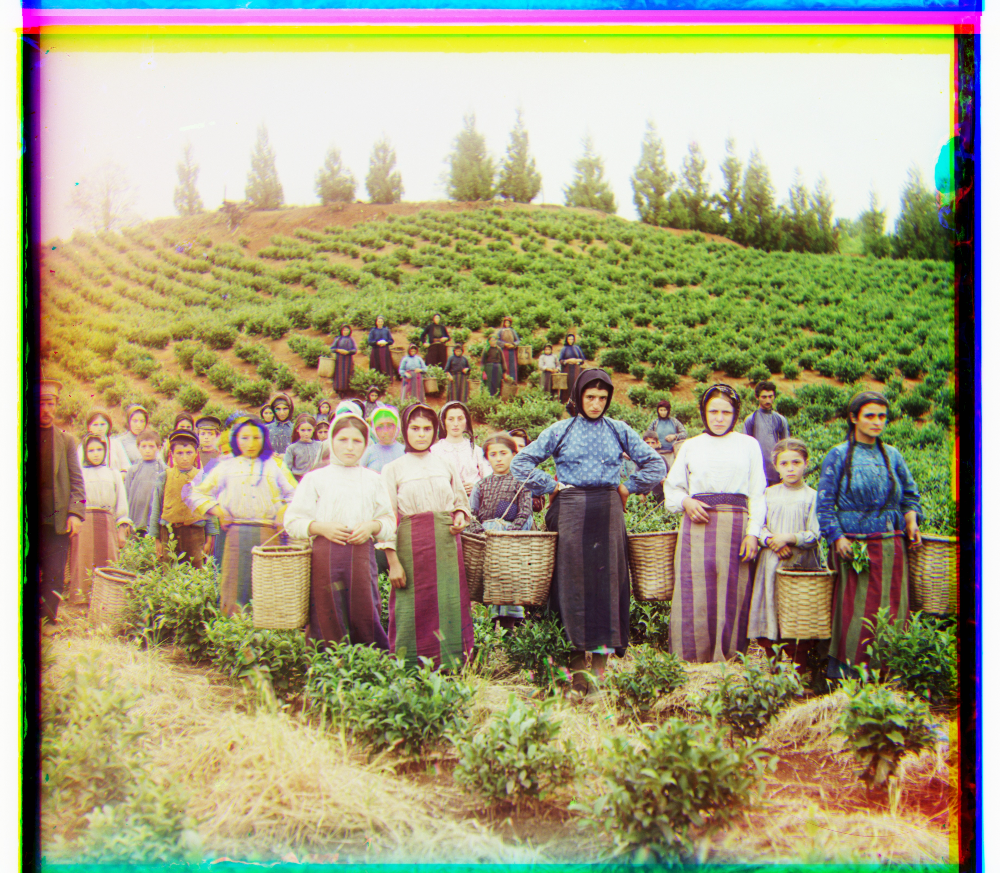
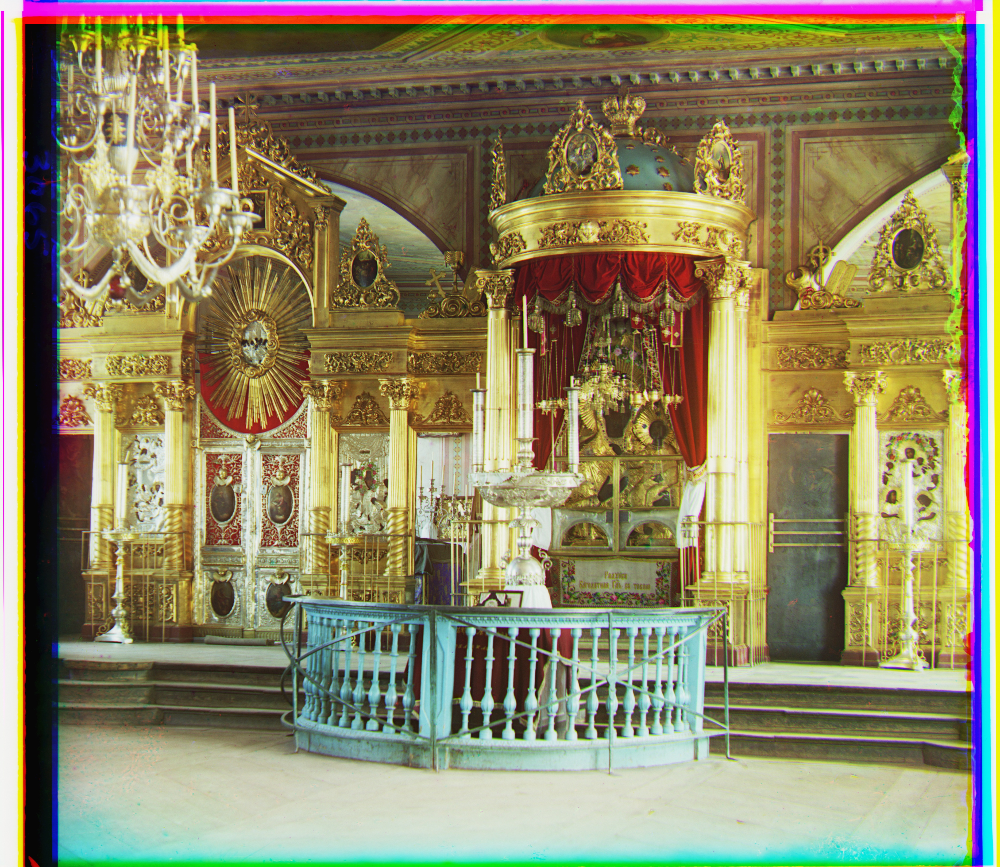
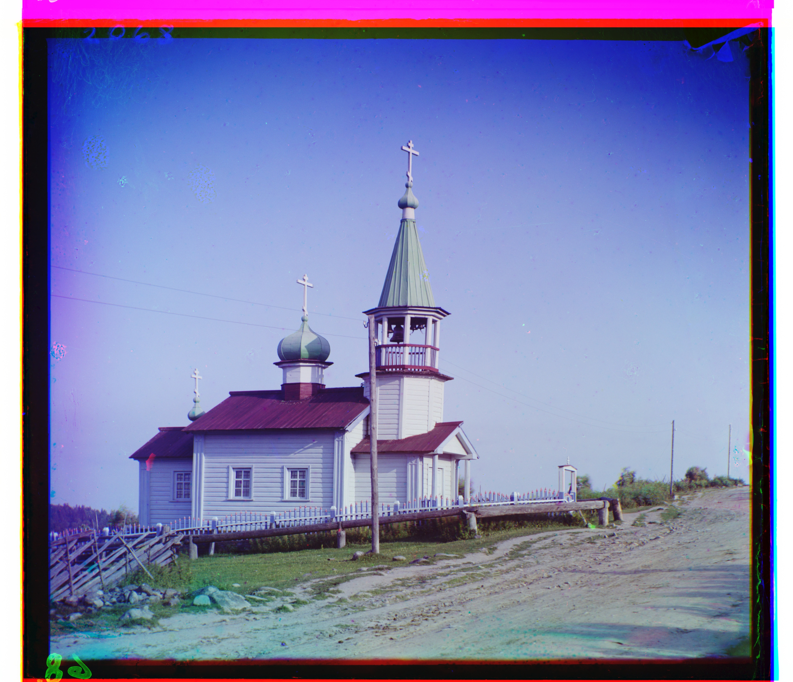
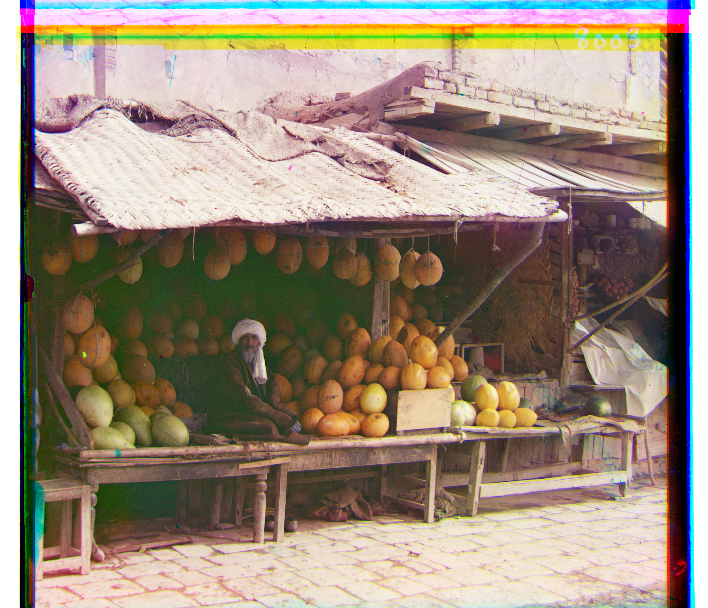
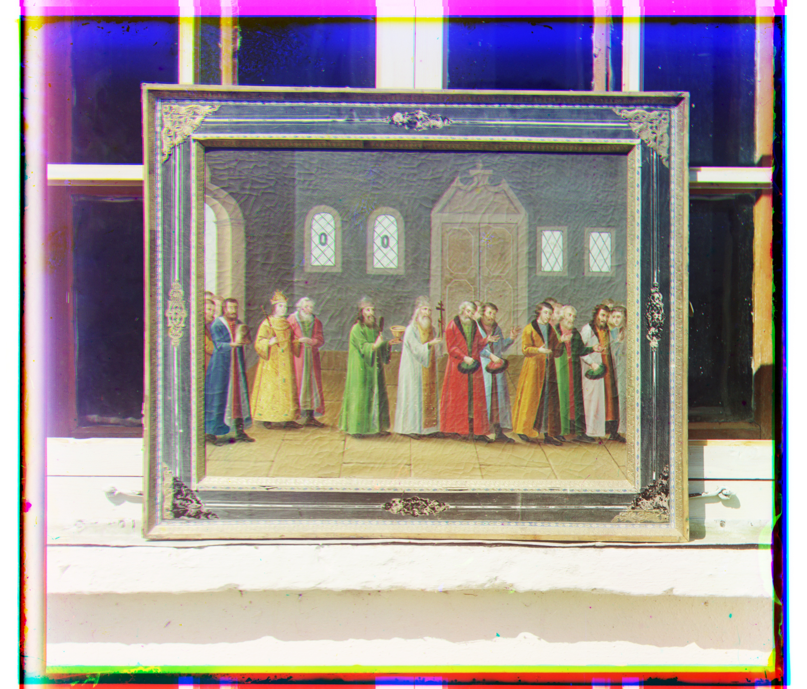
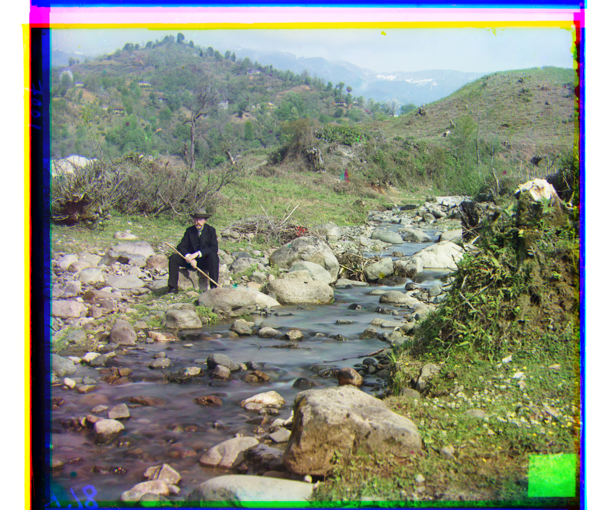
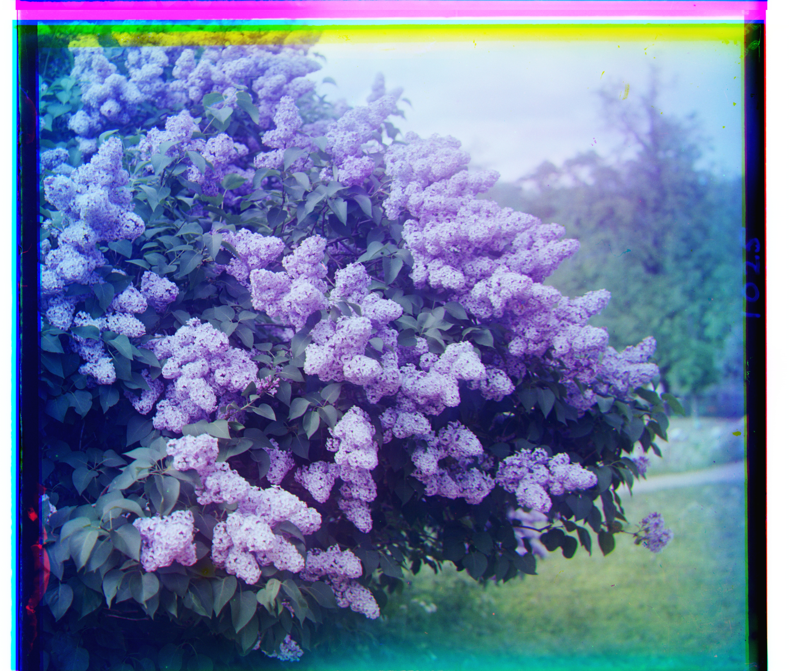
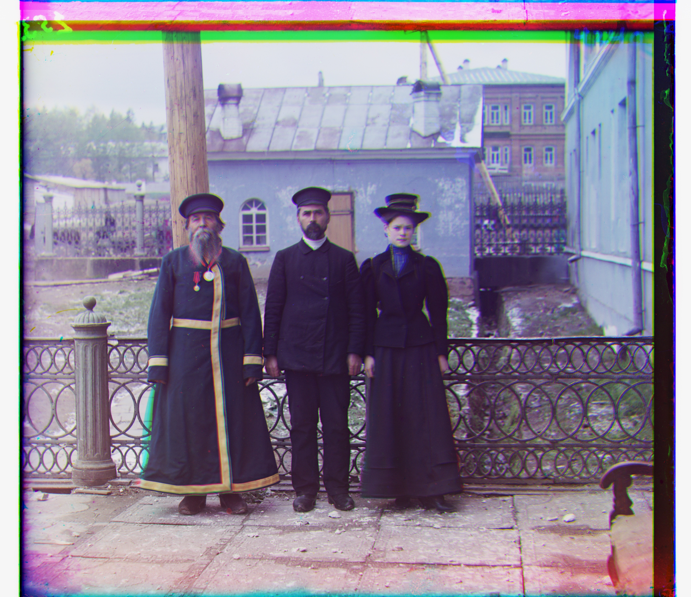
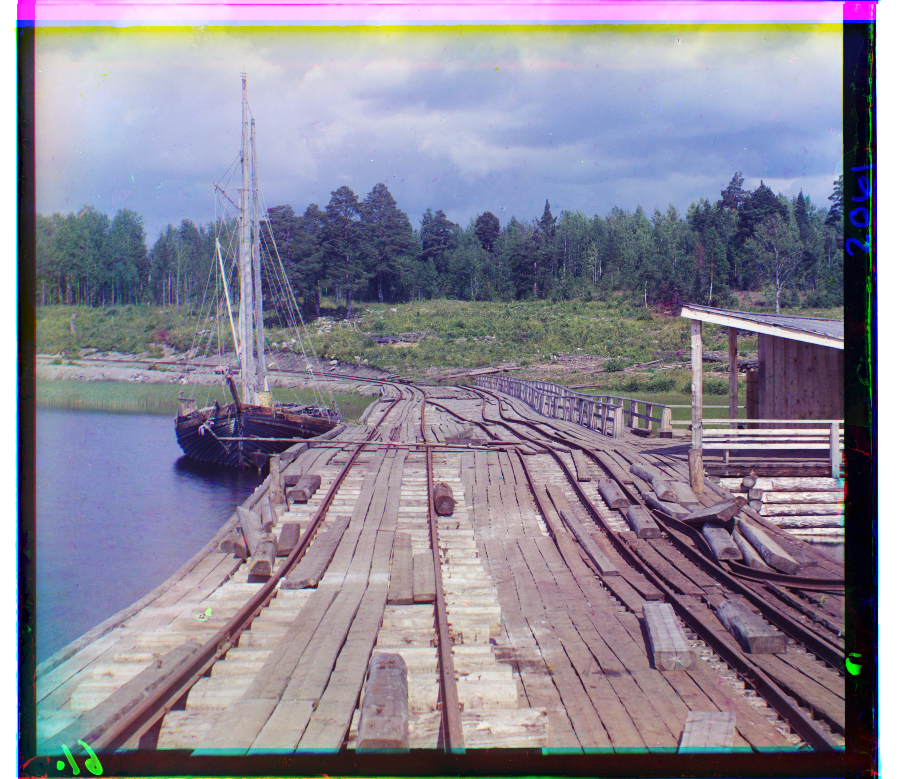


Prokudin-Gorskii Extras
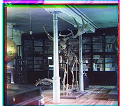
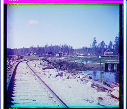
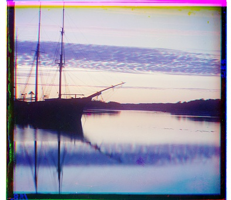
Failures
The Emir picture kept failing to align because the pixel brightness in each channel was completely different. This picture required preprocessing to align.
Bells & whistles
Matching on edges instead of pixel values
Because the Emir picture had very different brightness in each channel, I needed to keep track of the edges of the pictures instead. I did this by taking the difference between pixels left and right of it for the vertical edges and the pixels up and down of it for the horizontal edges. Then I took the L2 norm to get an image that was very bright when there was a high difference in brightness and dark when there wasn't. This doesn't work for the edges since I used np.roll, but the edges weren't used for the similarity scoring anyway. By using the edges instead of the brightness of each pixel I was able to circumvent this issue.
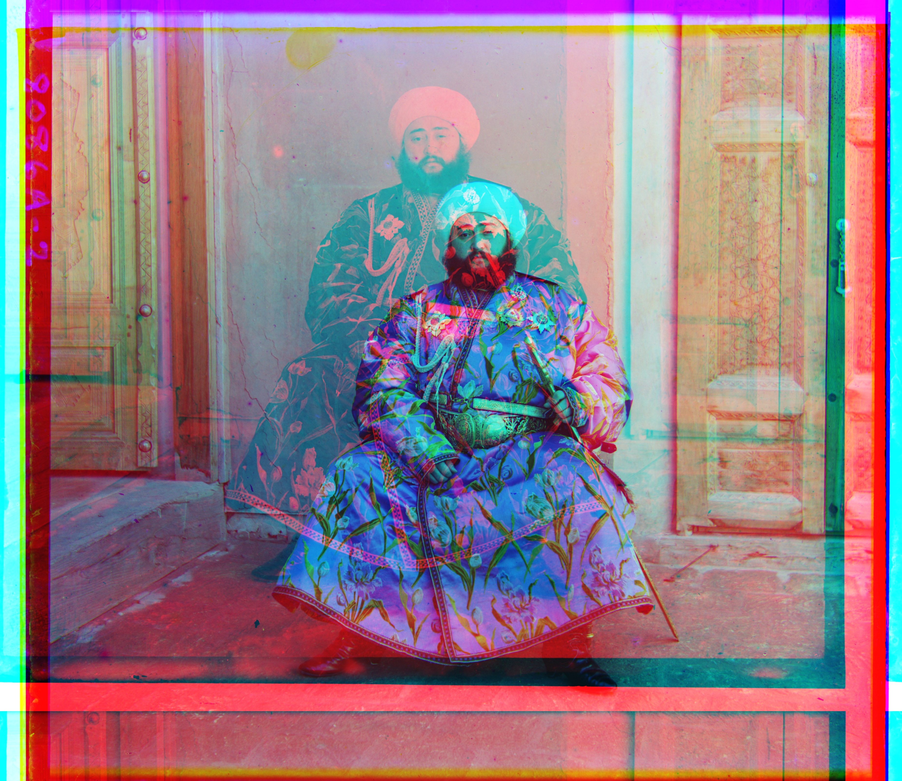